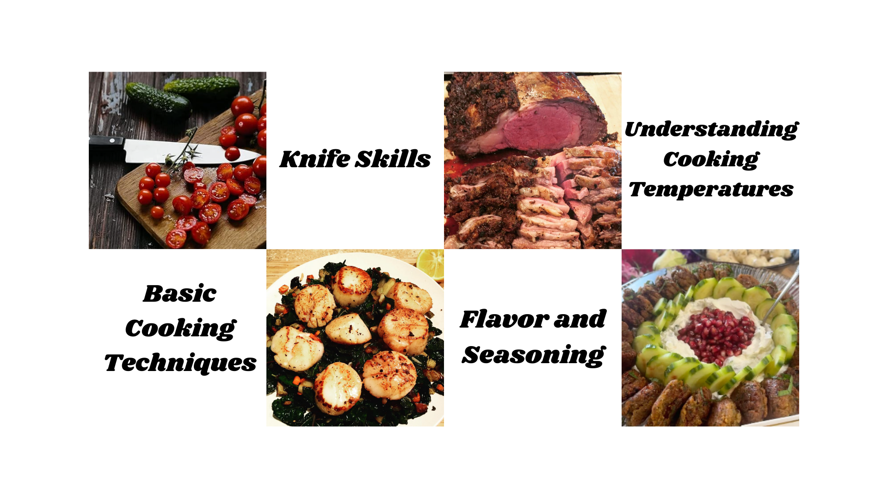

Welcome to my culinary world! I'm Chef Anthony, a passionate chef with over 20 years of experience in the culinary arts. My mission is to create unforgettable dining experiences that celebrate the beauty of food and culture.
From a young age, I had a natural talent for cooking, rawing inspiration from my Mediterranean roots. Over the years, I honed my skills as the head chef at the Esalen Institute, where I mastered the art of crafting delicious, health-conscious meals that cater to a variety of dietary needs. My culinary journey has taken me through some of the finest restaurants in the Bay Area, where I blended Latin flavors with my Mediterranean background to create exceptional menus. Whether you're looking for a personal chef to elevate your next event or want to learn how to cook with a focus on nutrition, flavor, and cultural fusion, I can bring the experience to you. Let’s create something unforgettable—whether it's a meal or a new skill in your kitchen.
